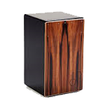
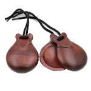
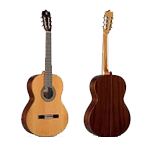
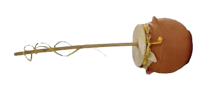

Flamenco Music Instruments
| Instrument |
Explanation |
Example (press the speaker icon to listen) |
| Cajon |
The cajón is a box-shaped drum that is played with the hands. It is the most common percussion
instrument in flamenco music. |

|
| Castanuelas |
Castanets are a pair of concave shells that are joined on one edge by a string. They are held in the
hand and used to produce clicks for rhythmic accents or a ripping or rattling sound consisting of a
rapid series of clicks. |

|
| Palmas |
Palmas are hand claps. They are used to provide rhythm and accompaniment for flamenco singing and
dancing. |
|
| Guitar |
The guitar is the most important instrument in flamenco music. It is used to provide accompaniment
for flamenco singing and dancing, as well as to play solo pieces. |

|
| Other Instruments can be included in this style |
zambomba |

|